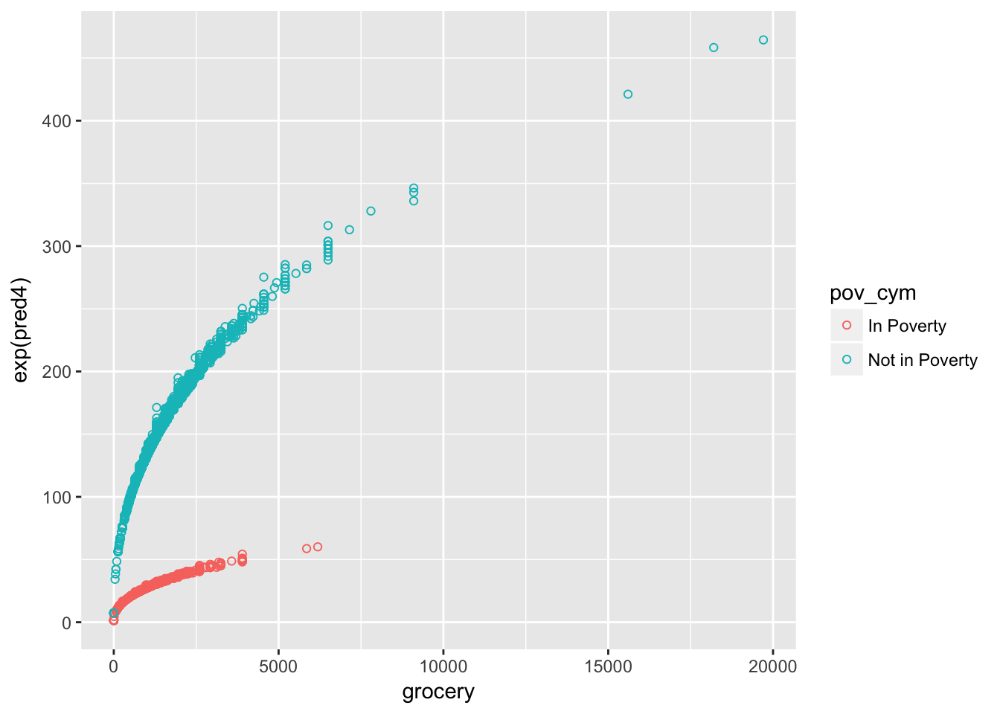

9 Scatterplots
Scatterplots are the best way to present data that has a continuous response variable. When creating scatterplots, the idea is to show ALL of the data, and then show how your model is summarizing the relationships in that data.
9.1 Setup
The code for today starts with the normal set of preliminaries, opening up the cex.RData dataset and creating a codebook.
9.2 Bivariate Regression
We begin with a simple model of grocery food spending as a function of income rank. As we found out last week, grocery food spending has a long right tail, and is a good candidate for a log transformation. We’ll be using that log transformation throughout.
Our first step should be to plot the data. Today, we’ll be using the ggplot2 library, which is a highly functional implementation of what’s known as the grammar of graphics. In a very small nutshell, the grammar of graphics refers to laying out a graphic in a series of layers. For our first scatterplot, we first specify the data that we’ll be drawing on, then the “aesthetic” of the graphic, which will be based on our x and y variables from our regression. I then specify the first layer, which is a series of points defined by the intersection of the x and y variables.
#Plot Spending vs. Income
g1<-ggplot(data=cex,
aes(x=inc_rank,y=(grocery_food+1))
)
g1<-g1+geom_point() # Add points at x and y
g1## Warning: Removed 1134 rows containing missing values (geom_point).
This first graphic shows the basic problem with the data, which is the highly non-normal shape of the outcome variable. No matter! We’ll keep moving forward. The next line of code adds a layer with a regression line to the plot.
g1<-g1+geom_smooth(method="lm")
g1## Warning: Removed 1134 rows containing non-finite values (stat_smooth).## Warning: Removed 1134 rows containing missing values (geom_point).It’s also really hard to see. We can use conditional means to help out with that problem. Let’s get the average amount of grocery spending at every percentile level of inc_rank. Notice the use of round to get income percentiles that are at two digits only.
cex_sum<-cex%>%mutate(inc_rank_r=round(inc_rank))%>%group_by(inc_rank_r)%>%summarize(groc_mean=mean(grocery))
g1a<-ggplot(cex_sum,aes(x=inc_rank_r,y=groc_mean))
g1a<-g1a+geom_point()
g1a## Warning: Removed 1 rows containing missing values (geom_point).
We can add a regression line to this simpler data
g1a<-g1a+geom_smooth(method=lm) # Add a line
g1a## Warning: Removed 1 rows containing non-finite values (stat_smooth).## Warning: Removed 1 rows containing missing values (geom_point).
As we figured out in class last week, a simple line plot doesn’t really do it. We need to transform that dependent variable. Luckily, ggplot has this kind of transformation built in.
g1<-ggplot(data=cex,
aes(x=inc_rank,y=(grocery_food+1))
)
my.breaks=c(0,100,500,1000,5000,10000,20000)
#Change the scale
g1<-g1+scale_y_continuous(trans="log",breaks=my.breaks)
g1<-g1+geom_point() # Add points
g1<-g1+geom_smooth(method=lm) #Add a Line
g1<-g1+ylab("Grocery Spending")+xlab("Income Percentile (0-1)") #Nice labels
g1## Warning: Removed 1134 rows containing non-finite values (stat_smooth).## Warning: Removed 1134 rows containing missing values (geom_point).
Notice how different the steps are on the y axis now. But this shows that our line actually fits the data much better once we work on the log scale. We’re now ready to go ahead and run our first model based on what we’ve learned.
#First model
m1<-lm(log(grocery_food+1)~inc_rank,data=cex);summary(m1)##
## Call:
## lm(formula = log(grocery_food + 1) ~ inc_rank, data = cex)
##
## Residuals:
## Min 1Q Median 3Q Max
## -7.3716 -0.3002 0.0714 0.4495 2.8556
##
## Coefficients:
## Estimate Std. Error t value Pr(>|t|)
## (Intercept) 6.2657005 0.0230229 272.15 <2e-16 ***
## inc_rank 0.0111849 0.0003982 28.09 <2e-16 ***
## ---
## Signif. codes: 0 '***' 0.001 '**' 0.01 '*' 0.05 '.' 0.1 ' ' 1
##
## Residual standard error: 0.8775 on 5702 degrees of freedom
## (1134 observations deleted due to missingness)
## Multiple R-squared: 0.1215, Adjusted R-squared: 0.1214
## F-statistic: 788.9 on 1 and 5702 DF, p-value: < 2.2e-16Quick Exercise Create a similar graphic, but this time use other store expenditures as the dependent variable. Run a regression with store expenditures as the dv and income rank as the only independent variable.
9.3 Multiple Regression
The next step is to add covariates. I’ll be working with the variable childage which is a factor that summarizes the ages of kids in the family. I’m going to set the color of the markers by the childage factor.
g2<-ggplot(data=cex,
aes(x=inc_rank,y=(grocery_food+1),color=as.numeric(childage),alpha=as.numeric(childage)) #notice the color option
)
g2<-g2+scale_y_continuous(trans="log",breaks=my.breaks)
g2<-g2+geom_point(size=1)
g2## Warning: Removed 1134 rows containing missing values (geom_point).Our first graphic is a bit complex, but shows that those in the “0” category, with no kids, have consistently lower spending on groceries across income levels. So let’s drop that group and see what the graphic looks like for those with at least one kid of any age.
g2a<-ggplot(data=filter(cex,as.character(cex$childage)!="0"),
aes(x=inc_rank,y=(grocery_food+1),color=childage)
)
g2a<-g2a+scale_y_continuous(trans="log",breaks=my.breaks,limits=c(100,8000)) #Changed overall scale
g2a<-g2a+geom_point(size=2) #Bigger points
g2a<-g2a+scale_colour_hue(l=50) #Darker palette
g2a## Warning: Removed 1212 rows containing missing values (geom_point).Notice the higher spending levels at every income level among those in the 4 and 5 categories.
#Model 2: with kids
mod2<-lm(log(grocery_food+1)~inc_rank+childage, data=cex,na.action=na.exclude);summary(mod2)##
## Call:
## lm(formula = log(grocery_food + 1) ~ inc_rank + childage, data = cex,
## na.action = na.exclude)
##
## Residuals:
## Min 1Q Median 3Q Max
## -7.1023 -0.2740 0.0760 0.4065 3.0520
##
## Coefficients:
## Estimate
## (Intercept) 6.1644855
## inc_rank 0.0094850
## childageAll less 6 0.3310502
## childageOldest bt 6 and 11 0.5116967
## childageAll children between 6 and 11 0.3977986
## childageOldest child between 12 and 17 and at least one child less than 12 0.6975020
## childageAll children between 12 and 17 0.3735577
## childageOldest child greater than 17 and at least one child less than 17 0.6158860
## childageAll children greater than 17 one under 6 0.3752501
## Std. Error
## (Intercept) 0.0228141
## inc_rank 0.0003958
## childageAll less 6 0.0436714
## childageOldest bt 6 and 11 0.0565955
## childageAll children between 6 and 11 0.0580077
## childageOldest child between 12 and 17 and at least one child less than 12 0.0476091
## childageAll children between 12 and 17 0.0529915
## childageOldest child greater than 17 and at least one child less than 17 0.0589702
## childageAll children greater than 17 one under 6 0.0384561
## t value
## (Intercept) 270.205
## inc_rank 23.967
## childageAll less 6 7.580
## childageOldest bt 6 and 11 9.041
## childageAll children between 6 and 11 6.858
## childageOldest child between 12 and 17 and at least one child less than 12 14.651
## childageAll children between 12 and 17 7.049
## childageOldest child greater than 17 and at least one child less than 17 10.444
## childageAll children greater than 17 one under 6 9.758
## Pr(>|t|)
## (Intercept) < 2e-16
## inc_rank < 2e-16
## childageAll less 6 4.00e-14
## childageOldest bt 6 and 11 < 2e-16
## childageAll children between 6 and 11 7.74e-12
## childageOldest child between 12 and 17 and at least one child less than 12 < 2e-16
## childageAll children between 12 and 17 2.01e-12
## childageOldest child greater than 17 and at least one child less than 17 < 2e-16
## childageAll children greater than 17 one under 6 < 2e-16
##
## (Intercept) ***
## inc_rank ***
## childageAll less 6 ***
## childageOldest bt 6 and 11 ***
## childageAll children between 6 and 11 ***
## childageOldest child between 12 and 17 and at least one child less than 12 ***
## childageAll children between 12 and 17 ***
## childageOldest child greater than 17 and at least one child less than 17 ***
## childageAll children greater than 17 one under 6 ***
## ---
## Signif. codes: 0 '***' 0.001 '**' 0.01 '*' 0.05 '.' 0.1 ' ' 1
##
## Residual standard error: 0.8463 on 5695 degrees of freedom
## (1134 observations deleted due to missingness)
## Multiple R-squared: 0.1838, Adjusted R-squared: 0.1826
## F-statistic: 160.3 on 8 and 5695 DF, p-value: < 2.2e-16Now let’s take a look at this model plotted against the actual data. I’m going to use the alpha setting to make the dots smaller. I’m also going to make the dots smaller.
cex<-cex%>%mutate(mod2_pred=exp(fitted(mod2)))
g3<-ggplot(cex,aes(x=inc_rank,y=grocery_food))
g3<-g3+geom_point(alpha=.2,size=.75)
g3<-g3+scale_y_continuous(trans="log",breaks=my.breaks)
g3<-g3+geom_smooth(data=cex,(aes(x=inc_rank,y=mod2_pred)))
g3## Warning: Transformation introduced infinite values in continuous y-axis## `geom_smooth()` using method = 'gam'## Warning: Removed 1134 rows containing non-finite values (stat_smooth).## Warning: Removed 1134 rows containing missing values (geom_point).As we add more variables to the model, it can get more difficult to plot relationships. One very good option is to plot lines based on a hypothetical set of data. Below, I create a hypothetical set of data that include values of income across the range of income, and includes values for every level of childage.
#Prediction, then plotting
hypo.data<-data.frame(expand.grid(
#range of income
inc_rank=seq(min(cex$inc_rank,na.rm=TRUE),
max(cex$inc_rank,na.rm=TRUE),
length=100),
#All levels of childage
childage=levels(cex$childage)
)
)Now, using my estimates from model 2, I predict what would happen to these hypothetical individuals. Once I’ve got my prediction, I transform it back out of the log scale into the “response” level of dollars.
#Predict using mod2 on hypothetical data
hypo.pred<-predict(mod2,
newdata=hypo.data,
interval="prediction",
se.fit=TRUE
)
hypo.data<-data.frame(hypo.data,hypo.pred$fit) #Add fit to the dataset
hypo.data$groc.p<-exp(hypo.data$fit) #exponentiate fit
hypo.data$groc.lwr<-exp(hypo.data$lwr) #exponentiate lower boundary
hypo.data$groc.upr<-exp(hypo.data$upr) #exponentiate upper boundaryNow we can plot the result, using the geom_smooth layer to give us lines for every level of childage.
g4<-ggplot(data=hypo.data,aes(x=inc_rank,y=groc.p,color=fct_reorder(f=childage,-groc.p))) #notice color
g4<-g4+geom_smooth(method=lm,se=FALSE)
g4To show this in the data we can break it out for every type of child age grouping.
## Resort child age for graphic
cex<-cex%>%mutate(childage=fct_reorder(f=childage,-grocery_food))
g5<-ggplot(cex,aes(x=inc_rank,y=grocery_food,color=childage))
g5<-g5+geom_point(alpha=.5)
g5<-g5+geom_smooth(method="lm",color="black")
g5<-g5+facet_wrap(~childage,ncol=3)
g5<-g5+scale_y_continuous(trans="log",breaks=my.breaks)
g5<-g5+xlab("Income Rank, 0-100")+ylab("Grocery Spending")
g5<-g5+theme(legend.position="none")
g5## Warning: Transformation introduced infinite values in continuous y-axis
## Warning: Transformation introduced infinite values in continuous y-axis## Warning: Removed 1190 rows containing non-finite values (stat_smooth).## Warning: Removed 1134 rows containing missing values (geom_point).
(Not so) Quick Exercise Run a different model, this time using fam_type as a factor variable. Plot the estimated relationship between income rank and food spending for each family type.
A.4 List of Lists of Datasets
A.4.1 Kaggle
Kaggle hosts competitions for predicting various outcomes. Companies supply their data to Kaggle and then provide awards for the teams that are best able to predict outcomes. They have a large number of publicly available datasets:
A.4.2 Data is Plural
A google docs spreadsheet with links to a huge number of datasets
https://docs.google.com/spreadsheets/d/1wZhPLMCHKJvwOkP4juclhjFgqIY8fQFMemwKL2c64vk/edit#gid=0
A.4.3 Tableau’s list of sports datasets
https://public.tableau.com/s/blog/2014/03/where-find-sports-data
A.4.4 Milne library list of public datasets
http://libguides.geneseo.edu/c.php?g=67454&p=434785#s-lg-box-1300425
A.4.6 Awesome public datasets on GitHub
https://github.com/caesar0301/awesome-public-datasets#awesome-public-datasets
A.4.7 Google BigQuery Data
A.4.8 ASD Free
The website says it all “obsessively-detailed instructions to analyze survey data for free with the r language, the survey package, monetdblite.” Includes the survey of consumer expenditures, nationaly longitudinal survey of youth, european social survey and so. much. more.